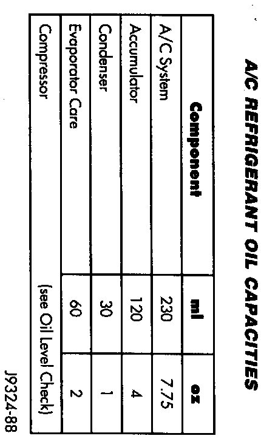

Refrigerant Oil: Service and Repair
SYSTEM OIL LEVELIt is important to have the correct amount of oil in the A/C system to ensure proper lubrication of the compressor. Too little oil will result in damage to the compressor. Too much oil will reduce the cooling capacity of the system.
The oil used in the 10PA17 compressor is a polyalkylene glycol synthetic oil (ND-8 PAG), wax-free refrigerant oil. Only refrigerant oil of the same type should be used to service the system. Do not use any other oil. The oil container should be kept tightly capped until it is ready for use and then tightly capped after use to prevent contamination from dirt and moisture. Refrigerant oil will quickly absorb any moisture it comes in contact with.
It will not be necessary to check oil level in the compressor or to add oil unless there has been an oil loss. This may be due to a ruptured line, shaft seal leakage, leakage from the evaporator, condenser leak, accumulator leakage or loss of refrigerant due to a collision. Oil loss at a leak point will be evident by the presence of a wet, shiny surface around the leak.
REFRIGERANT OIL LEVEL CHECK
A/C Refrigerant Oil Capacities:

When an A/C system is assembled at the factory, all components (except the compressor) are refrigerant oil free. After the system has been charged with R-134a and operated, the oil in the compressor is dispersed through the lines and components. The evaporator, condenser and accumulator will retain a significant amount of oil (refer to the Refrigerant Oil Capacities chart).
When a component is replaced, the specified amount of refrigerant oil must be added. When the compressor is replaced, the oil must be drained from the replaced compressor and measured. Drain all the oil from the new compressor. Add back into the new compressor the amount of oil that was drained out of the old compressor.
When a refrigerant line or component has ruptured and it has released an unknown amount of oil. The A/C compressor should be removed and drained through the discharge and suction ports.